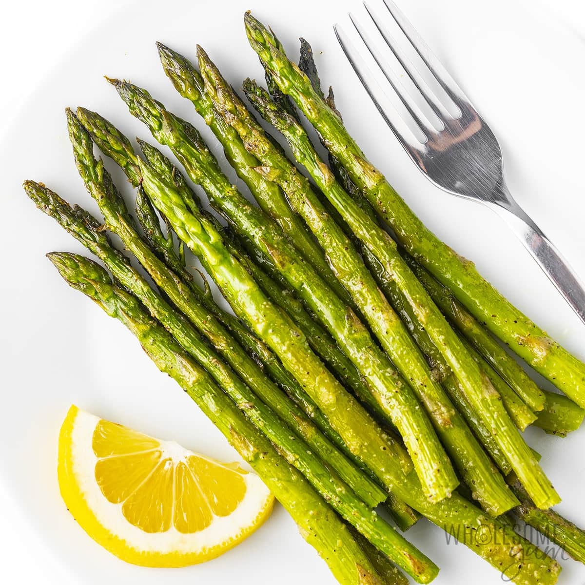

Oven Roasted Asparagus

Description
A simple asparagus dish. Pairs asparagus with parmesan and garlic for a savory finish.
Ingredients
- 1 bunch thin asparagus spears, trimmed
- 3 tablespoons olive oil
- 1/2 teaspoon ground black pepper
- 1 teaspoon sea salt
- 1 1/2 tablespoons grated Parmesan cheese (Optional)
- 1 clove garlic, minced (Optional)
- 1 tablespoon lemon juice (Optional)
Steps
- Preheat oven to 425 degrees F.
- Place the asparagus into mixing bowl, drizzle with the olive oil. Toss to coat spears, then sprinkle with cheese, garlic, salt and pepper. Arrange the asparagus onto a baking sheet in a single layer.
- Bake until just tender, typically 12-15 minutes. Sprinkle with lemon juice before serving.